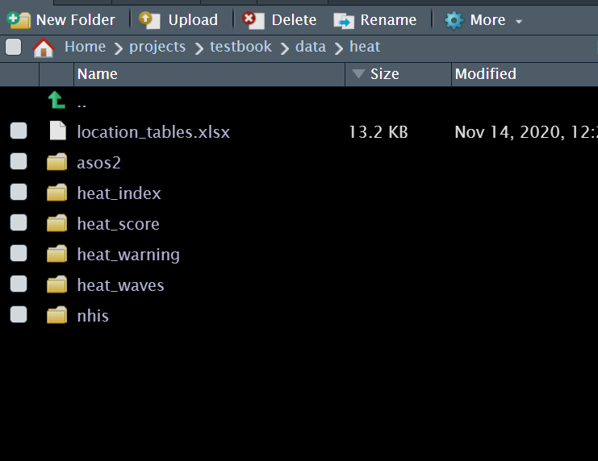
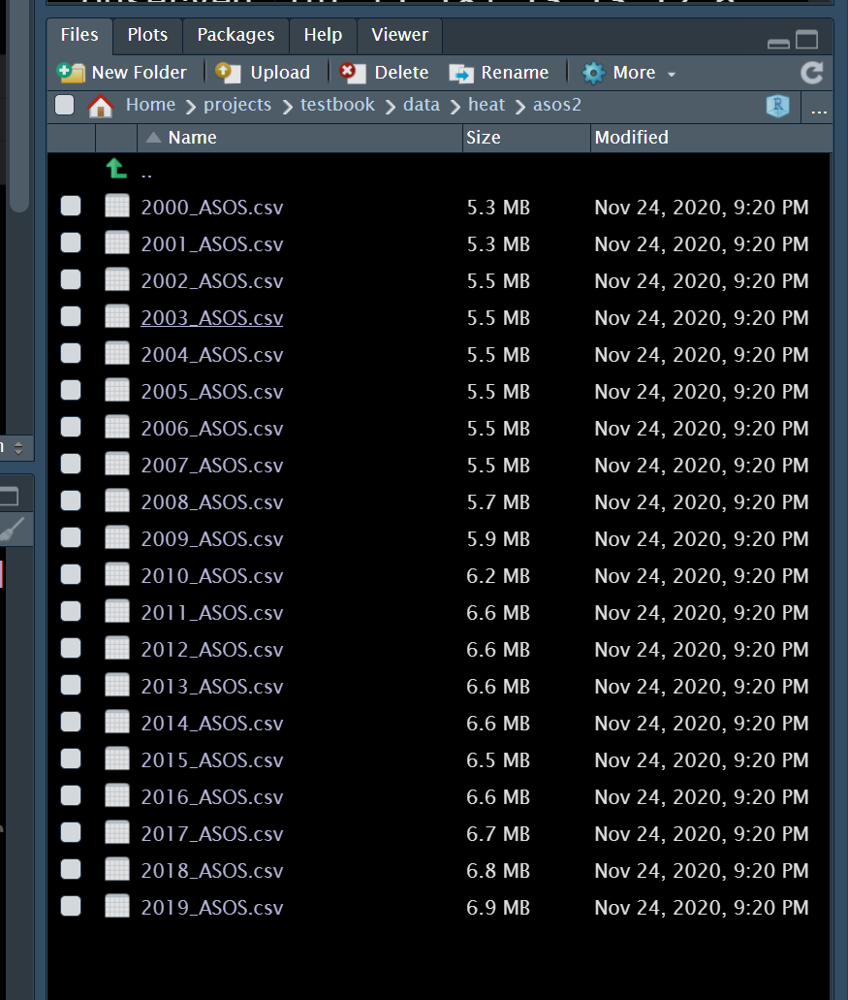

Chapter 17 Repeated analysis
이번 시간에는 반복 작업을 줄이는 방법에 대해 이야기 해보겠습니다. 반복 작업을 코드로 단순화 하는 것은 여러 장점이 있습니다. 무엇보다 실수를 줄일수 있습니다. 그리고 시간도 절약할 수 있고요. 몇가지 알아보도록 하겠습니다.
library(tidyverse)
library(data.table)
library(ggplot2)동영상은 여기에 있습니다. 말이 느리네요 유튜브 들어가서 1.2배도 들으시는게 더 좋을 것 같습니다.
실습자료는 https://dspubs.org/webapps/forum/open_data/heat.zip 에 있습니다.
17.1 추출
일자별로 미세먼지가 높은 날(Dusty)과 미세먼지가 없이 맑은 날(Clean)이 반복된다고 생각해보겠습니다. dusty가 4일, clean 이 6일 이라면 아래와 같습니다.
weather <- rep(c("dusty", "clean"), times = c(4, 6))
weather## [1] "dusty" "dusty" "dusty" "dusty" "clean" "clean" "clean" "clean" "clean"
## [10] "clean"그냥 무작위로 오늘은 어떤 날씨일지 해보겠습니다.
sample(weather, 1)## [1] "clean"이를 10000번 해보면 어떻게 될까요? 어떤 가요 거의 4:6의 비율로 나타나나요?
B <- 10000
events <- replicate(B, sample(weather, 1))
table(events)## events
## clean dusty
## 6026 3974prop.table(table(events))## events
## clean dusty
## 0.6026 0.3974중복 추출을 10000번 시행해 보면 어떻게 될 까요? 다음과 같이 시행해 볼 수 있습니다. 4:6의 비율이 유지되고 있나요?
events <- sample(weather, B, replace = TRUE)
prop.table(table(events))## events
## clean dusty
## 0.5978 0.402217.2 파일 불러오기
반복 작업 중 미세먼지 데이터 등을 불러오면 매일 엑셀이 하나씩 형성이 됩니다. 이를 모두 불러오는 것은 매우 힘든일입니다. 반복 작업을 통해 불러오겠습니다.
우선 여러 종류의 액셀을 형성해 보겠습니다. 구글클래스에서 heat.zip 파일을 다운 받고 폴더에 넣어 주세요.
 이중 ASOS 파일을 부러오겠습니다.  년도별 자료입니다. 현제는 몇년치 자료이고 모두 *.csv 파일 형태로 되어 있습니다. 이를 반복해서 불러보도록 하겠습니다.
우선 현제 폴더 위치를 알아야 합니다. 그리고 데이터가 있는 폴더 위치를 알아야 합니다. 현제 폴더는 /home/dspub/books/dspubbook 이네요.
getwd()## [1] "/home/dspub/books/dspubbook"여기에 /data/heat/asos2 에 파일이 있습니다. 즉, 아래와 같이 파일 폴더를 찾을 수 있습니다.
paste(getwd(),"/data/heat/asos2", sep = "" )## [1] "/home/dspub/books/dspubbook/data/heat/asos2"설정된 경로에 들어 있는 파일 목록을 보도록 하겠습니다.
lpwd <- paste(getwd(),"/data/heat/asos2/", sep = "" )
ldas <- list()
ldas <- dir(path = lpwd,
pattern = '*.*')
ldas## [1] "2000_ASOS.csv" "2001_ASOS.csv" "2002_ASOS.csv" "2003_ASOS.csv"
## [5] "2004_ASOS.csv" "2005_ASOS.csv" "2006_ASOS.csv" "2007_ASOS.csv"
## [9] "2008_ASOS.csv" "2009_ASOS.csv" "2010_ASOS.csv" "2011_ASOS.csv"
## [13] "2012_ASOS.csv" "2013_ASOS.csv" "2014_ASOS.csv" "2015_ASOS.csv"
## [17] "2016_ASOS.csv" "2017_ASOS.csv" "2018_ASOS.csv" "2019_ASOS.csv"우선 첫번째 파일을 불러와보도록 하겠습니다.
빠른 속도를 위해서 fread 명령을 수행하겠습니다.
library(data.table)
test1 <- fread(paste0(lpwd, ldas[[1]] ))잘 불러와 졌나요? 그럼 모두 불러와 보겠습니다. 이때 이번 시간의 목적인 반복 작업이 수행됩니다.
asos <- list() # list 형식의 asos 만들기
st <-Sys.time()
asos <- lapply(ldas,
function(dat){
fread(paste0(lpwd, dat ))
})
et <- Sys.time()
et-st## Time difference of 0.7504282 secs반복 작업이 되었습니다. 형성된 asos를 보도록 하겠습니다. 20개의 파일이 각각 list로 되어 있네요.
summary(asos)## Length Class Mode
## [1,] 60 data.table list
## [2,] 60 data.table list
## [3,] 60 data.table list
## [4,] 60 data.table list
## [5,] 60 data.table list
## [6,] 60 data.table list
## [7,] 60 data.table list
## [8,] 60 data.table list
## [9,] 60 data.table list
## [10,] 60 data.table list
## [11,] 60 data.table list
## [12,] 60 data.table list
## [13,] 60 data.table list
## [14,] 60 data.table list
## [15,] 60 data.table list
## [16,] 60 data.table list
## [17,] 60 data.table list
## [18,] 60 data.table list
## [19,] 60 data.table list
## [20,] 60 data.table list이제 모두 합쳐 하나의 데이터 프레임으로 만들어 보겠습니다.
st <- Sys.time()
asos_dat <- do.call(plyr::rbind.fill, asos)
et <- Sys.time()
et -st## Time difference of 0.6324322 secs이제 하나의 데이터가 되었습니다. 여기서 중요한 것은 dir을 통해 모든 데이터 list를 구하고, 이것을 lapply를 통해 한꺼번에 데이터를 불러온 다음, do.call을 통해 모두 rbind하는 것입니다. 매우 자주 사용되는 전처리 작업이므로 꼭 익숙해 지시기 바랍니다.
17.3 분석 반복하기 (change point 찾기)
threshold를 찾는 방법 중에 threshold point마다, piecewise regression을 반복해서 구하고, 최적의 모델을 찾는 방법을 사용할 수 있습니다. piecewise regression 의 간단한 설명은 다음과 같습니다
| threshold points (piecewise regression) | codes |
|---|---|
| total | Resp = α + β1 · Dose + β2 ·( Dose – Ɵ) + + Ɛ0 |
| If Dose < Ɵ | Resp= α + β1 · Dose + Ɛ0 |
| If Dose > Ɵ | Resp= α - β2 ·Ɵ +( β1 + β2 )· Dose + Ɛ0 |
| model selection | minimal AIC value |
17.3.1 자료 생성
아래 처럼 임로 데이터를 생성해 보았습니다. 어떤 유해물질 노출 (Dose) 에 따라 건강영향 (Resp) 가 나타났다고 생각해 보겠습니다. 그리고 일정량에서 threshold가 있다고 생각해보겠습니다.
set.seed(0)
dose <- seq(0,10, 0.1)
length(dose)## [1] 101pb<-c(rnorm(50, 0, 0.001), rnorm(30, 0, 0.01), rnorm(10, 0.1, 0.05),rnorm(11, -0.1, 0.05))
resp <-1/(1+exp(-(dose-5)))+rnorm(length(dose), 0, 0.1)+pb
plot(dose, resp, xlab='Dose', ylab='Response', cex.lab=1.5, cex.axis=1.5, cex.main=1.5, cex.sub=1.5)
cohort<-data.frame(dose, resp, pb)17.3.2 가상의 threshold 값 수행해보기
한 1에서 5 사이에 있어 보입니다. 이를 통해 예상되는 matrix (outdata)를 구해보았습니다.
outdata의 행의 이름을 threshold point에 따라 intercept, beta for before threshold, and its p value, beta for post threshold and its pvalue와 그때은 AIC 값을 구해보겠습니다 .
우선 하나만 구해보겠습니다. therhold가 1일때와 5일때를 를 가정해 보겠습니다.
cpdose <- ifelse(dose -1 >0, dose -1, 0)
cpm <- glm(resp ~ dose + cpdose)
summary(cpm)$aic## [1] -92.20184cpdose <- ifelse(dose -5 >0, dose -5, 0)
cpm <- glm(resp ~ dose + cpdose)
summary(cpm)$aic## [1] -86.9744어떤 가정이 모델 적합도를 높이나요? 네 threshold가 1일 때 입니다. 그럼 2랑도, 2.5랑도 비교해 봐야겠지요. 이때 반복 분석을 수행해보도록 하겠습니다.
위의 모델을 함수로 만들었습니다
thr_fun <- function(thres){
cpdose <- ifelse(dose - thres >0, dose - thres, 0)
cpm <- glm(resp ~ dose + cpdose)
aic <- summary(cpm)$aic
data.frame(
'threshold' = thres,
'aic' = aic)
}이것을 돌릴 범위를 정해보겠습니다.
# 이게 어떤 의미 일까요?
dose[which(dose == 1):which(dose == 5)]## [1] 1.0 1.1 1.2 1.3 1.4 1.5 1.6 1.7 1.8 1.9 2.0 2.1 2.2 2.3 2.4 2.5 2.6 2.7 2.8
## [20] 2.9 3.0 3.1 3.2 3.3 3.4 3.5 3.6 3.7 3.8 3.9 4.0 4.1 4.2 4.3 4.4 4.5 4.6 4.7
## [39] 4.8 4.9 5.0이제 반복해서 작업해 보겠습니다.
simul_list <- list()
simul_list <- lapply(dose[which(dose ==1):which(dose ==5)], thr_fun
)이제 데이터 프레임으로 만들어 보겠습니다.
simul_dat <- do.call(rbind, simul_list)그림을 그려보겠습니다.
library(ggplot2)
opt.thres <- simul_dat$threshold[which.min(simul_dat$aic)]
simul_dat %>%
ggplot(aes(x = threshold, y = aic)) +
geom_line() +
geom_vline(xintercept = opt.thres) +
geom_text(x = opt.thres + 0.8, y = -90, color = 'red',
label = paste0(round(opt.thres, 3), '점에서 최소 AIC를 보입니다.' )) +
theme_minimal()
즉 2.1에서 threshold를 잡아 모델을 그리면 가장 적합함을 알 수 있습니다.
thres = 2.1
f_cpdose <- ifelse(dose - thres >0, dose - thres, 0)
f_cpm <- glm(resp ~ dose + f_cpdose)prepwlm <- predict(f_cpm)
scaleFUN <- function(x) sprintf("%.2f", x)
cohort %>%
ggplot(aes(x= dose, y = resp)) +
geom_point() +
theme_minimal() +
scale_y_continuous(labels = scaleFUN) +
geom_line(aes(y = prepwlm), color ='red')
17.4 Repeated analysis (big data)
반복 작업을 하는 이유는 여러가지가 있는데요, 어떤 것은 R 의 메모리로는 감당할 수 없는 데이터가 있습니다. 이러한 데이터를 통해 작업을 하는 방법을 이야기 해보겠습니다.
17.4.2 data handling start
17.4.2.1 각 데이터별 변동 변수 생산
반복 클리닝을 위한 컴퓨터 준비
#simple idea 1: just use counting number of each activity
# is someone use regular option, the counting number might be sqired..
tic()
rm(list=ls())
if(!require(shiny)) install.packages('shiny'); library(shiny);
if(!require(DBI)) install.packages('DBI'); library(DBI)
if(!require(odbc)) install.packages('odbc'); library(odbc)
if(!require(DT)) install.packages('DT'); library(DT)
if(!require(tidyverse)) install.packages('tidyverse'); library(tidyverse)
if(!require(tidyverse)) install.packages('tidyverse')
if(!require(data.table)) install.packages('data.table')
if(!require(skimr)) install.packages('skimr')
if(!require(parallel)) install.packages('parallel')
if(!require(feather)) install.packages('feather')
if(!require(skimr)) install.packages('skimr')
if(!require(tictoc)) install.packages('tictoc')
detectCores()
## nmon: monitor cpu
## clear cash
passworddspub = readRDS("secure/password.rds")
# 메모리 초기화
system("sudo -kS sh -c 'echo 3 >/proc/sys/vm/drop_caches'", input=passworddspub)
#system("sudo -kS apt-get clean", input=passworddspub)
#system("sudo -kS lshw -class disk", input=passworddspub)
#system("systemd-resolve --statistics")
#system("systemd-resolve --flush-caches")
rm(list=ls())
gc()월별 데이터 불러오기
## gloabl
###########################################################
# 향후 여기 숫자를 loop로 바꾸면서 반복 분석 #
LOOP_data_number= 1 #
# #
###########################################################
# 1,2
#LOOP_hospital_number =1
#LOOP_variable_number = 1
dt = list() # sliced data set by each hospital number
process = list()
passworddspub = readRDS("secure/password.rds")
#
## data names coresponding to data_number
lpwd <- "/home/dspub/locdb/ssd970/hpbig/"
data_names <- list()
data_names <- dir(path= lpwd, pattern = '*.txt')
data_names
## data, data pwd
data_file <- sprintf("%s%s", lpwd, data_names[LOOP_data_number] )
data_file
## get header name and tolower (whynot)
cnames <- names(fread(data_file, nrows = 0, header = T)) %>% tolower()
cnames
### read ykiho only : ykiho is unique number of each hospital
hop_list <- fread(data_file, select=c('YKIHO'))
hop_list1 <- hop_list %>% unique()
hop_length <- nrow(hop_list1)
hop_length
hop_list1각 월별 n 번째 기관 데이트를 불러오고 이를 통해 모든 변수에 대한 변동 변수 생성하는 함수 만들기
# n번째 YKIOH 가져오기
## data location (R 메모리 사용 안하게 하기 위해 linux unix 에서 실행)
## get 1st ho_list indexing data from all data
#dataFiles
hospital_long = function(LOOP_hospital_number){
# 리눅스 자체 함수 사용
command <- sprintf(
"grep --text ',%s,' %s",
hop_list1[LOOP_hospital_number] %>% as.numeric(),
data_file
)
# 메모리 사용 함수
### get just one hospital data (hosptial level data step)
dt[[LOOP_hospital_number]] <- data.table::fread(cmd = command)
## loop start
colnames(dt[[LOOP_hospital_number]]) <- cnames
## long file function just one column (column level data step)
ducon = function(i){
dt[[LOOP_hospital_number]] %>%
group_by(dt[[LOOP_hospital_number]][, ..i]) %>%
count() %>%
ungroup() %>%
mutate(nn = colnames(.)[1], ll = nrow(.)) %>%
select(nn, ll) %>%
unique()
}
# data step start
# Multicore 사용 시작 core number = 22 개 (전체 48개의 절반 이하 사용 권장)
all_list = mclapply(1:length(colnames(dt[[LOOP_hospital_number]]))%>%as.numeric(), ducon, mc.cores = 22)
all_list_m = do.call(rbind, all_list)
all_list_mh = all_list_m %>% mutate(key = hop_list1[LOOP_hospital_number] %>% as.numeric())
rm(list='all_list_m')
rm(list='all_list')
return(all_list_mh)
}상기 변동 변수 생성 함수 반복 실행함 multicore 와 loop 사용하는 하이브리드 방식
# hibrid multicore
## director create
datasave_foler = data_names[LOOP_data_number] %>% str_replace(., ".txt", "")
datasave_foler
dir.create(sprintf("%s/%s", "process", datasave_foler))
# create list
hop_length # 몇개 병원,
hop_list = list() #
hop_list_m <- list()
tic()
for (z in 1:8){
#clear cash
passworddspub = readRDS("secure/password.rds")
system("sudo -kS sh -c 'echo 3 >/proc/sys/vm/drop_caches'", input=passworddspub)
#system("sudo -kS apt-get clean", input=passworddspub)
#system("sudo -kS lshw -class disk", input=passworddspub)
#system("systemd-resolve --statistics")
#system("systemd-resolve --flush-caches")
Sys.sleep(5) # 5 second pause
tic()
# multic core 40개, 500개 병원씩 반복
hop_list[[z]] = mclapply(((z-1)*500+1):(500*z), hospital_long, mc.cores=40)
toc()
print(((z-1)*500+1))
print((500*z))
hop_list_m[[z]] = do.call(rbind, hop_list[[z]]) %>%
mutate(keydate = datasave_foler %>%as.numeric())
saveRDS(hop_list_m[[z]], sprintf("%s/%s/%s%s%s%s", "process", datasave_foler, datasave_foler, "_", 500*z , ".rds" ))
gc()
}
toc()
# 시간 경과 확인 (월별 모든 병원 청구자료 변환 시간 40분 소요), 72개월이므로 48시간 소요 )
tic()
hop_list[[100]] = mclapply(4001:as.numeric(hop_length), hospital_long, mc.cores=40)
hop_list_m[[100]] = do.call(rbind, hop_list[[100]])%>%
mutate(keydate = datasave_foler %>%as.numeric())
saveRDS(hop_list_m[[100]], sprintf("%s/%s/%s%s%s%s", "process", datasave_foler, datasave_foler, "_", 9000 , ".rds" ))
gc()
toc()
print("total per 1 month")
toc()